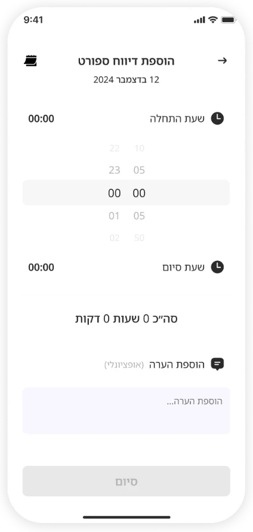
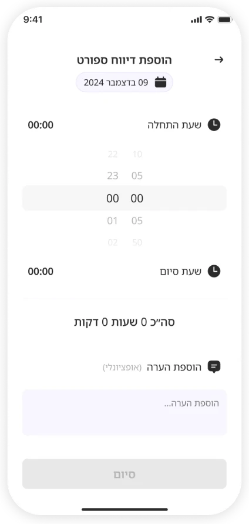

Finding 01
The date itself should be the button
5 out of 7 participants tapped directly on the date text when trying to log a past entry, not on the calendar icon next to it. People expect the visible date to be the interactive element, and a separate icon reads as decoration. So we combined them into one control.
Before

After
